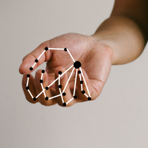
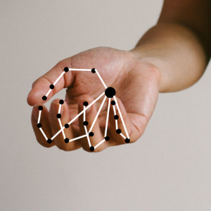

WORK
PoseNet is a machine learning model that is used for Real-time Human Pose Estimation. PoseNet can be used to estimate either a single pose or multiple poses, meaning there is a version of the algorithm that can detect only one person in an image/video and one version that can detect multiple persons in an image/video. It is a computer vision tenchique that can be used to detect the body posture by estimating joints of a body. This can be used in AR, animation and designing interactive games to make them more interesting.
The original PoseNet model was ported to TensorFlow.js by Dan Oved. Pose estimation has many uses, from interactive installations that react to the body to augmented reality, animation, fitness uses, and more.
There are a total of 17 keypoints that are used by this algorithm to estimate the post of a human body.
This model can also be used by considering different perpectives using mutiple camers so as to make the model more accurate.
Warning!!
This project is still a work in progress, and so we have linked a more accurate model on 'WEB' demo, which is made and controlled by peeps at Tensorflow.
How it is being used vs How we aim to use it
 
